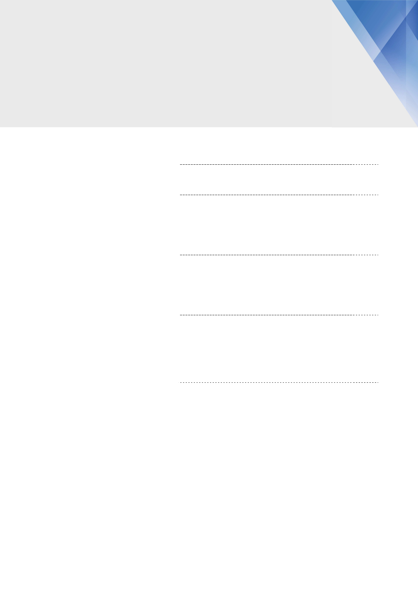

Contents
I. Executive summary
2
2. 바닥을 탈출하는 금융부문
5
1. 금융부문의 중요성
2. 개선되는 금융부문
3. 금융부문 개선 배경
–
업계 공통
8
1. 자산 건전성 개선
2. 중고차 가치 상승
4. 금융부문 개선 배경
–
현대차
11
1. 리스 잔존가치 현실화
2. 판매 회복으로 금융부문 이익개선 지속
3. 실적전망
기업개요
21